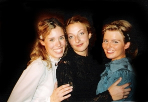

Seit über zehn Jahren "vertrauern" in einer russischen Provinzstadt drei schöne, gebildete, adelige Schwestern. Olga, die Lehrerin an einem Mädchengymnasium, Mascha, die unglücklich mit einem langweiligen Gymnasiallehrer verheiratet ist, und Irina, der nichts anderes übrig bleibt, als Volksschullehrerin zu werden. Nur das im Ort ansässige Regiment ihres toten Vaters verspricht ein wenig Abwechslung vom tristen Alltag...
Mit Claudia Haigermoser, Franziska Strasser, Anja Christina Lohmann, Konrad Krukowski, Marina Schneider, Josef Seibold, Alexander von der Goltz, Thomas Kempf, Florian Brummer, Ronny Barner, Kevin Kemp, Colin Bertrand, Andreas Lochbihler, Ina Grimmer
Regie & Produktion: Maria Milisavljevic, Franziska Strasser
Ausstattung & Kostüm: Franziska Strasser
Technik: Andreas Lochbihler
Maske: Pierre Soldatenko, Laura Rahm, Marion Schikora